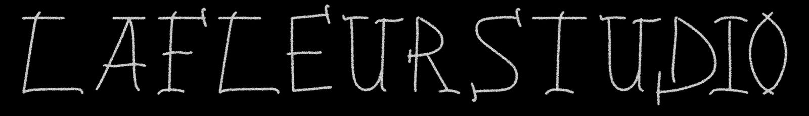
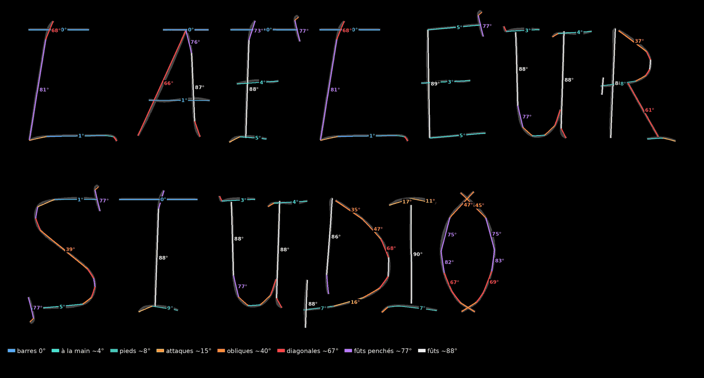
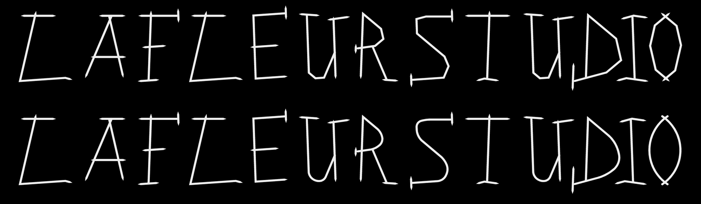
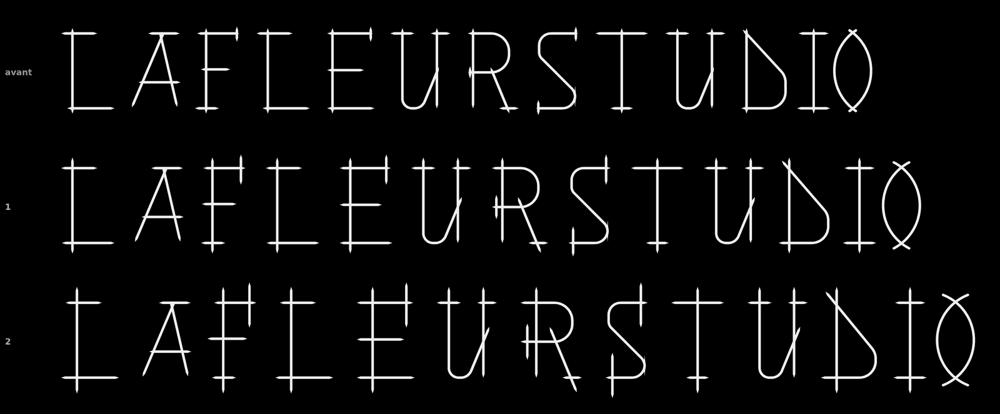
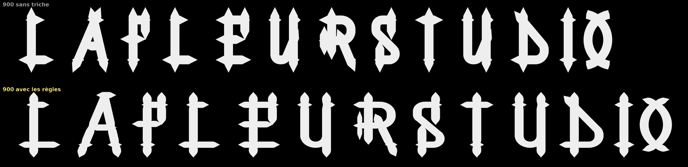
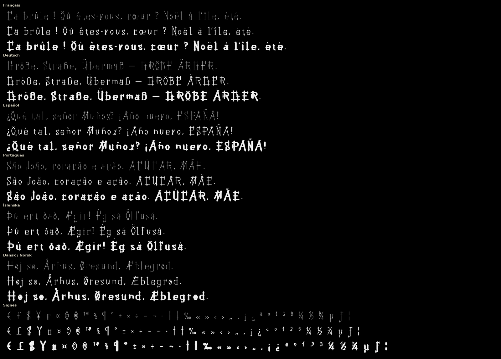

LaFleurStudio · 2026
NEXUM
Techno gothique. Géométrie stricte, croisements partout, bouts en pointe. Née de chiffres romains tracés à la craie. 9 graisses, du Hairline au Black.
Les graisses
De 100 à 900. Plus c'est gras, plus les croisements s'allongent, et plus on triche pour rester lisible.
Testeur
Clique et écris.
Caractères
Majuscules, minuscules, 2 jeux de chiffres, accents d'Europe, ponctuation, symboles. Les accents aussi : pointes, croix, ogives.
Comment on l'a faite
Nexum part de 7 lettres dessinées à la main. Ensuite : des règles, des scripts Python, et beaucoup d'allers-retours à l'œil.
Des chiffres romains à la craie
Tout part de 7 lettres à la craie : I V X L C D M, les chiffres romains, version néo-gothique. Empattements en vagues, traits qui se croisent et dépassent.
Le reste de LAFLEURSTUDIO en découle. C'est la police racine : Jalousia.

8 angles
On a découpé chaque trait de Jalousia en segments droits : 98 segments, rangés en 8 angles. Barres, pieds, attaques, obliques, diagonales, fûts. Ces 8 angles deviennent les règles de la version en traits droits.

Sharp, puis arrondi
D'abord que du droit : les 8 angles, des coins vifs, des bouts en pointe.
Puis les courbes reviennent sur le D, le U, le S et le R. Le O devient une ogive : deux arcs de cercle qui se croisent en pointe.

Techno gothique : des croix partout
Plus rien de fait main : verticales à 90°, barres à 0°, diagonales à 67,5° et 45°. À chaque coin, les deux traits se croisent et dépassent.
Croisements 3 fois plus longs que dans la première version. C'est ça, Nexum.

2 jeux de chiffres
Par défaut, les chiffres minuscules, plus ronds. Les chiffres romains, d'un seul tenant entre deux barres, sortent avec l'option « chiffres alignés ». Le 0 devient N, pour nulla.
9 graisses, et on triche
Même squelette de 100 à 900. Le trait va de 32 à 220 unités, les croisements de 210 à 320. Pour que le gras reste lisible :
- Contraste : horizontales plus fines que les verticales.
- Pièges à encre : les traits s'amincissent là où ils se croisent.
- Détails : petites croix plus fines.
- Pointes plus courtes en fers de lance.
- Lettres élargies pour garder l'intérieur ouvert.
- Croisements en biais fondus dans le fût dès 500.
- U et u redessinés dès 700.
- A coiffé d'une barre dès 600, étiré jusqu'aux pointes.

Aux normes
335 caractères. Les accents se posent tout seuls sur n'importe quelle lettre, le i perd son point sous un accent.
Les accentuées se crénent comme leur lettre de base. Mêmes hauteurs de ligne dans les 9 graisses.

Télécharger
Usage personnel : gratuit. Projets perso, études, essais, maquettes.
Usage commercial : sur autorisation. Logo, client, produit vendu, pub, site d'entreprise… écris à info@lafleurstudio.ch. Chaque projet est étudié : l'autorisation peut être gratuite ou payante.
Revente, partage des fichiers et modification interdits sans accord. Texte complet : LICENCE.txt.
Installation sur un site web
@font-face { font-family: "Nexum"; font-weight: 100;
src: url(Nexum-Hairline.woff2) format("woff2"); }
@font-face { font-family: "Nexum"; font-weight: 900;
src: url(Nexum-Black.woff2) format("woff2"); }
/* … une règle par graisse, de 100 (Hairline) à 900 (Black) */
/* Chiffres romains */
.chiffres { font-feature-settings: "lnum" 1; }